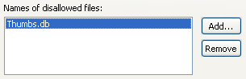

Audit - Rules - Eclipse Plug-in DevelopmentDescriptionThis group contains audit rules that are specific to the development of Eclipse plug-ins. |
| Rules: |
Summary
Classes implementing IAction or IActionDelegate should report their usage.
Description
This audit rule finds classes that implement either IAction or IActionDelagate but that do not invoke one of the methods defined on the class UsageProfilerPlugin used to record the action's use.
Summary
The bundle activation policy must be duplicated in order to work in all versions of Eclipse.
Description
This audit rule checks for bundle manifest files that specify a bundle activation policy using either the Eclipse-LazyStart or Bundle-ActivationPolicy header, but not both. In Eclipse 3.3 a new manifest file header was introduced that is compatible with OSGI. In order for a bundle (plug-in) to be correct in all versions of Eclipse (that support the use of manifest files) both headers should be included in the manifest file.
Example
A manifest file specifying a Bundle-ActivationPolicy without a Eclipse-LazyStart would be flagged:
Bundle-ActivationPolicy: lazy
Summary
The method toString() should never be invoked for AST nodes.
Description
This audit rule looks for invocations of the method toString() on AST nodes. The toString() method produces a string that should only be used for debugging purposes, so it is almost never the right method to use.
Example
Given the following declaration:
SimpleName name;
The following invocation would be flagged:
name.toString()
Summary
Some files should not exist in a project.
Description
This audit rule finds files within projects that should be deleted. The list of files is configurable, but typically includes auxilliary files created by utility programs.

Summary
Bindings should be checked for equality using their keys.
Description
This audit rule looks for places where bindings are compared using either the identity operator (==) or the equals method. Bindings are not unique across AST structures, so they should always be compared using their keys.
Example
The following comparison would be flagged:
if (leftBinding == rightBinding) {
Summary
Java model elements should be checked for equality using equals.
Description
This audit rule looks for places where Java model elements (subclasses of IJavaElement) are compared using one of the identity operators (== or !=). Java model elements are not necessarily unique, but equals is guaranteed to be correct.
Example
The following comparison would be flagged:
IMethod leftMethod, rightMethod;
if (leftMethod == rightMethod) {
Summary
Referenced image files should exist.
Description
This audit rule checks for the references within a plugin.xml file to image files that do not exist.
Example
If the file icons/view16/ourView.gif does not exist, the following reference to it would be flagged:
<view icon="icons/view16/ourView.gif" .../>
Summary
Messages referenced in code should exist in property files.
Description
This audit rule looks for subclasses of org.eclipse.osgi.util.NLS and verifies that there is a key in the corresponding messages.properties file for each of the fields defined in it. It also looks for invocations of the older getString() method to ensure that there is a key corresponding to the argument passed in to that method (if the run-time value can be determined at compile time).
Example
If a subclass had a field like the following:
public static String Externalized_String;
and the messages.properties file did not contain a key of Externalized_String, then a violation would be created.
Summary
Properties referenced in a plugin.xml file need to be defined in the corresponding plugin.properties file.
Description
The plugin.xml file can be internationalized by using properties names (names prefixed by a percent sign (%)) anywhere a value is expected This rule checks to see that all referenced properties are defined in the corresponding plugin.properties file.